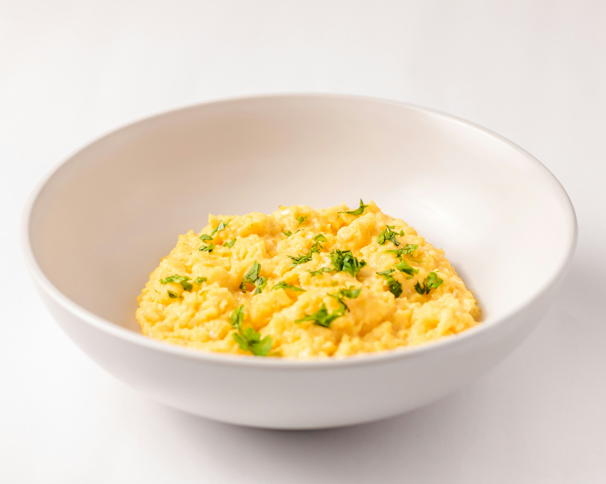

Scrambled Eggs

Description:
These are delicious and easy-to-make scrambled eggs that are perfect for a quick breakfast.
Ingredients:
- 4 large eggs
- 1/4 cup milk
- Salt and pepper to taste
- 1 tablespoon butter
Instructions:
- In a bowl, whisk together the eggs, milk, salt, and pepper until well combined.
- Heat a non-stick skillet over medium heat and add the butter. Allow it to melt and coat the pan.
- Pour the egg mixture into the skillet. Let it cook undisturbed for a few seconds until it starts to set around the edges.
- Using a spatula, gently stir the eggs from the edges towards the center, allowing the uncooked eggs to flow to the edges.
- Continue cooking and stirring until the eggs are mostly set but still slightly runny. Remove from heat as they will continue to cook with residual heat.
- Serve immediately and enjoy your scrambled eggs!
Back to Home